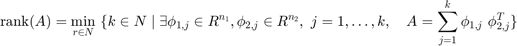
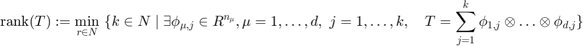
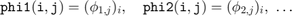
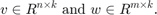
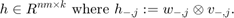
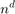
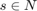
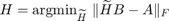
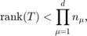
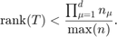

CP format
Written by Sebastian Kraemer, IGPM at RWTH Aachen University
The CP decomposition (F. L. Hitchcock (1927)) is historically also known as PARAFAC (Harshman, Richard A. (1970)) or CANDECOMP (Carroll, J. D.; Chang, J. (1970)).
The CP format is a straight-forward generalization of the low rank decompostion for matrices (which does not mean that it easy to work with). Likewise, the (CP-)rank of a tensor is defined as equivalent to the rank of matrices:


Contents
- Matlab: svd
- Low rank decomposition in CP format
- Matlab: cells
- EXERCISE 1: mode_1_kron
- EXERCISE 2: CP_to_full_tensor
- EXERCISE 3: verification
- SOLUTION 3
- Low rank approximation
- Alternating least squares
- Matlab: The permute function
- EXERCISE 4: permute
- EXERCISE* 5: CP_approximation
- EXERCISE* 6: rank 2 approximation of a rank 3 tensor
- Generic rank of CP tensors
- EXPERIMENT* 1: generic rank
- Next: Tucker_format.m
clear all % this clears all variables of their values
Matlab: svd
For matrices, the well known SVD can be used to construct a low rank decomposition:
A1 = [2 3 5
0 1 2
4 5 8]
r = rank(A1) % Note that this call already uses an svd. We will later avoid that.
[U,S,V] = svd(A1);
A1 =
2 3 5
0 1 2
4 5 8
r =
2
S X = U(:,1:2)*S(1:2,1:2) Y = V(:,1:2) X*Y'
S =
12.1303 0 0
0 0.9254 0
0 0 0.0000
X =
-6.1592 -0.2543
-2.0764 -0.8298
-10.2419 0.3212
Y =
-0.3621 0.9062
-0.4877 0.0153
-0.7944 -0.4225
ans =
2.0000 3.0000 5.0000
0 1.0000 2.0000
4.0000 5.0000 8.0000
Low rank decomposition in CP format
Unfortunately, even to calculate the CP-rank of a tensor is NP-hard. Accordingly, there is no rank() function for tensors implemented in Matlab.
However, one does not always have to use the rank, but may work with a slightly higher number of summands. These summands may be saved as matrices, where each first mode corresponds to the tensor mode size and the second one to the summation index. Then, with reference to the upper notation,

For example, the following three matrices define a CP-representation for the tensor T1.
phi1 = [1,0; 1,2; 2,0] phi2 = [2,3; 2,1; 1,2; 0,1] phi3 = [1,0; 2,1]
phi1 =
1 0
1 2
2 0
phi2 =
2 3
2 1
1 2
0 1
phi3 =
1 0
2 1
T1 = zeros(3,4,2);
T1(:,:,1) = [2 2 1 0
2 2 1 0
4 4 2 0];
T1(:,:,2) = [4 4 2 0
10 6 6 2
8 8 4 0];
T1
T1(:,:,1) =
2 2 1 0
2 2 1 0
4 4 2 0
T1(:,:,2) =
4 4 2 0
10 6 6 2
8 8 4 0
phi1(2,:).*phi2(1,:).*phi3(2,:) % .* is an entry-wise multiplication
entry = sum(phi1(2,:).*phi2(1,:).*phi3(2,:))
same_entry = T1(2,1,2)
ans =
4 6
entry =
10
same_entry =
10
Matlab: cells
In order to save phi1, phi2 and phi3 as one object, we can use cells.
Phi = cell(3,1);
length(Phi)
Phi{1} = phi1;
Phi{2} = phi2;
Phi{3} = phi3;
phi2
Phi{2}
ans =
3
phi2 =
2 3
2 1
1 2
0 1
ans =
2 3
2 1
1 2
0 1
EXERCISE 1: mode_1_kron
Complete the following function mode_1_kron.m. It will be very useful for the next exercise. As input, it gets two matrices

The output should be the matrix

correct_result = [1 0
1 0
2 0
2 0
2 2
4 0]
your_result = mode_1_kron(phi1,phi3)
correct_result =
1 0
1 0
2 0
2 0
2 2
4 0
your_result =
ANSWER 1 MISSING
EXERCISE 2: CP_to_full_tensor
Write a function that receives a cell Phi as above and returns the corresponding full tensor. This function is supposed to work for arbitray dimensional tensors. The reshape function can be very useful here.
T1 your_result = CP_to_full_tensor(Phi)
T1(:,:,1) =
2 2 1 0
2 2 1 0
4 4 2 0
T1(:,:,2) =
4 4 2 0
10 6 6 2
8 8 4 0
your_result =
ANSWER 2 MISSING
EXERCISE 3: verification
Given a CP representation, we can now construct the full tensor.
Note however that in most applications one wants to avoid working with full tensors, since their size scales as .
So this should be used only for small tensors. Your task is now to make sure that your solution from exercise 2 is indeed correct. Repeated calls will generate new CP representations (you can use rng(s), , to obtain the same random numbers each time).
d = randi([4,6],1) r = randi([2,6],1) n = zeros(1,d);
d =
4
r =
2
Rho = cell(d,1); for mu = 1:d n(mu) = randi([2,5],1); Rho{mu} = randn(n(mu),r); end n T2 = CP_to_full_tensor(Rho); T2(1:16)
n =
2 2 3 2
ans =
ANSWER 2 MISSING
SOLUTION 3
'ANSWER 3 MISSING';
Low rank approximation
Having understood CP tensor a bit better, we will now try to go the other way around. This means, given a full tensor, we want to construct a representation for this tensor. Unluckily, we do not know the CP rank of the tensor, which we hence either have to guess, or find out through try and error.
Should we underestime the rank, then we want to get as close to the best approximation as possible. For matrices, one could simply use the SVD again. For the CP format, we have to find something else.
A2 = randn(4,3)*randn(3,4) + 0.1*randn(4,4) % nearly rank 3
[U,S,V] = svd(A2);
rank_3_best_approximation = U(:,1:3)*S(1:3,1:3)*V(:,1:3)'
A2 =
0.8525 0.8804 1.9645 0.4665
0.9115 -0.4421 -0.6932 1.6212
0.3033 0.0065 -1.2822 -0.2732
-1.3850 -0.1788 -0.4614 -1.4768
rank_3_best_approximation =
0.8644 0.8622 1.9695 0.4566
0.9256 -0.4636 -0.6873 1.6094
0.3077 -0.0002 -1.2803 -0.2768
-1.3670 -0.2062 -0.4538 -1.4919
Alternating least squares
For tensors, the alternating least squares (ALS) method poses a convenient way to obtain a low rank approximation. The solution is not guaranteed to be a global optimimum, but, if convergent, is locally optimal. In the matrix case, alternating least squares can look like the following.
r = 3; n = size(A2); X = randn(n(1),r); Y = randn(n(2),r); for iter = 1:10 X = A2/(Y'); Y = (X\A2)'; end X*Y'
ans =
0.8644 0.8622 1.9695 0.4566
0.9256 -0.4636 -0.6873 1.6094
0.3077 -0.0002 -1.2803 -0.2768
-1.3670 -0.2062 -0.4538 -1.4919
As you can see (should you not be very unlucky), the result is the same as the best approximation above.
The simple call A/B is more elaborate as it may seem. In this case, it automatically returns the least squares solution

For more information, the Matlab documentation about mldivide can be helpful.
Matlab: The permute function
Matlab's permute function is very useful for the next exercise. However, other than the reshape function, its call requires to rearrange the underlying array of a tensor. It hence does not come free in cost (yet this is nothing to worry about here).
The permute function is easily explained through an example
A = [1 3
2 4]
permute(A,[2,1])
A'
A =
1 3
2 4
ans =
1 2
3 4
ans =
1 2
3 4
We have just shifted the second to the first mode and vice versa. This is nothing else than a simple transposition. For tensors, we have more options:
T3 = zeros(3,4,2); T3(:) = 1:3*4*2; P1 = permute(T3,[2,3,1]); P2 = permute(T3,[3,1,2]); size_T3 = size(T3) size_P1 = size(P1) size_P2 = size(P2) I = [2,3,1]; T3(I(1),I(2),I(3)) P1(I(2),I(3),I(1)) P2(I(3),I(1),I(2))
size_T3 =
3 4 2
size_P1 =
4 2 3
size_P2 =
2 3 4
ans =
8
ans =
8
ans =
8
EXERCISE 4: permute
Find a convenient way to determine the underlying array of permute(T,[3,2,1]) by hand without using Matlab's help or any other computation, for any 3 dimensional tensor T (for example T4).
T4 = zeros(2,2,2); T4(:) = 1:8; % P4 = permute(T4,[3,2,1]) % call this only once you want to verify your % solution % P4(:)'
EXERCISE* 5: CP_approximation
Complete the following program, which, given a rank r and full tensor T, performs a least squares algorithm analogous to the matrix version in order to construct a CP approximation.
The code does not have to be efficient from the start, but once the worksheet is finished, you may want to try to optimize its performance. An optimal performance scales linearly in the dimension d. (about 20 lines of lucid code are sufficient to complete CP_approximation)
This exercise can be more difficult to complete. If you have trouble, but would rather like to go on, then CP_approximation_solution.m provides a solution, since it is required for the remaining part.
d = 4 r = 3 n = zeros(1,d); Rho = cell(d,1); for mu = 1:d n(mu) = randi([2,5],1); Rho{mu} = randn(n(mu),r); end n T5 = CP_to_full_tensor(Rho); % construct full tensor of rank r Rho_eigen_correct_rank = CP_approximation(T5,r,100); % approximate with rank r if ~isequal(Rho_eigen_correct_rank,'ANSWER 5 MISSING') T5_subtensor = T5(:,:,2,2) % subtensor of full tensor % construct full tensor of approximate CP representation: T_eigen_correct_rank = CP_to_full_tensor(Rho_eigen_correct_rank); % this should (mostly) be the same as above: T_eigen_correct_rank_subtensor = T_eigen_correct_rank(:,:,2,2) % approximate with rank r-1: Rho_eigen_lower_rank = CP_approximation(T5,r-1,100); % construct full tensor of approximate CP representation: T_eigen_lower_rank = CP_to_full_tensor(Rho_eigen_lower_rank); % this will only be close to the original tensor: T_eigen_lower_rank_subtensor = T_eigen_lower_rank(:,:,2,2) else 'ANSWER 5 MISSING' end
d =
4
r =
3
n =
5 5 2 4
ans =
ANSWER 5 MISSING
EXERCISE* 6: rank 2 approximation of a rank 3 tensor
The CP format has a further unwelcome property, namely that the set of rank r tensor is not closed. One can show that the following tensor T6 is indeed a rank 3 tensor.
However, what happens in the following example? You may increase max_iter up to 50000.
max_iter = 200;
Nu = cell(1,3);
Nu{1} = [2 2 0
0 0 2];
Nu{2} = [2 0 2
0 2 0];
Nu{3} = [0 2 2
2 0 0];
T6 = CP_to_full_tensor(Nu)
T6 = ANSWER 2 MISSING
Rank_2_appr = CP_approximation(T6,2,max_iter); if ~isequal(Rank_2_appr,'ANSWER 5 MISSING') Rank_2_appr{1} Rank_2_appr{2} Rank_2_appr{3} Rank_2_full_tensor = CP_to_full_tensor(Rank_2_appr) end
Generic rank of CP tensors
Since we have a tool now to contruct a low rank approximation, we can use it to at least obtain upper bounds for the CP-rank. A trivial upper bound is (why?)

which can quickly be reduced to the better bound (why?)

While the generic rank of a matrix equals the minimal mode size, the behaviour for CP tensors is far more complex and only slightly understood. Some insight can be gained through the experiment below.
rank(rand(4,4)) rank(rand(4,3)) rank(rand(2,3)) rank(rand(3,2)*rand(2,3))
ans =
4
ans =
3
ans =
2
ans =
2
EXPERIMENT* 1: generic rank
Try to increase the rank r until (almost) all approximations are successful (say with an error lower than 1e-4). Also document the highest value for which (almost) no approximations are successful. Modify the mode sizes as well. Remember that you can evaluate a single section with control+enter.
N = 5; r = 10; T = rand(N,N,N); T(:,:,2) Phi = CP_approximation(T,r,100); if ~isequal(Phi,'ANSWER 5 MISSING') T_appr = CP_to_full_tensor(Phi); T_appr(:,:,2) Residual = T(:,:,2)-T_appr(:,:,2) norm(Residual(:)) end
ans =
0.0544 0.2390 0.4015 0.0746 0.3754
0.2600 0.7802 0.4624 0.5911 0.5460
0.5891 0.6173 0.7073 0.4460 0.1117
0.4797 0.1441 0.4012 0.9266 0.9045
0.1987 0.7161 0.0144 0.0949 0.6333
Next: Tucker_format.m
open Tucker_format.m and continue there